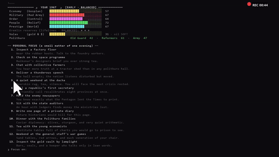
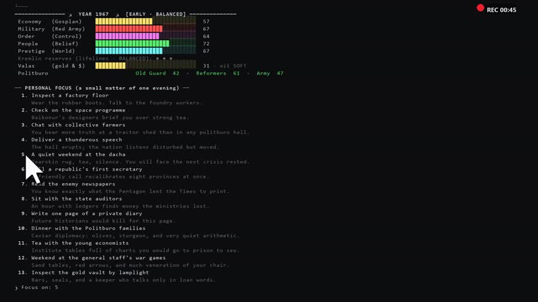
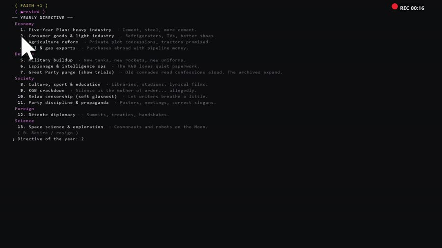
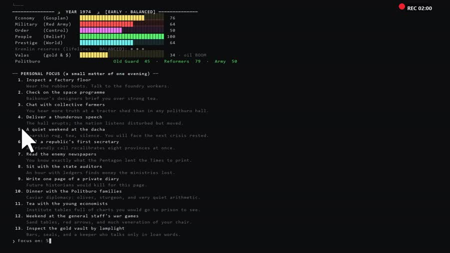
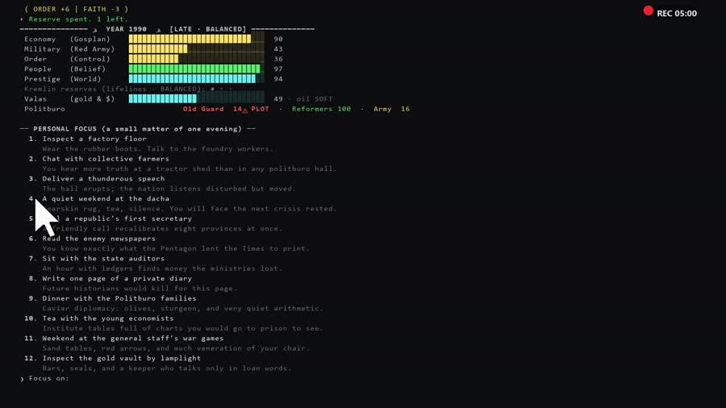

Any Python 3.8+. Windows, Linux, macOS. Nothing else to install — the game is pure standard library.
Clone the repo, or grab the BETA v4 release and unzip it.
Run it. Choose your ideology of difficulty. Survive.




Economy, Military, Order, People's Faith, World Prestige. All erode every year. Any one that touches zero removes the portraits and ends the game.
A yearly oil index (1973 boom → 1986 glut → late-90s trough) drives a hard-currency reserve you spend on imports, loans and grain.
Three factions — Old Guard, Reformers, Army — keep private moods. Let one despair and they book your conference room for a palace coup.
End 1991 strong and the Politburo offers ten more years (1992–2001). Survive to 2001 and history rewrites itself around you.
Every decision you ever made, every fork still open, every delayed consequence in the pipeline — and history's own timetable for comparison.
The whole state — including the RNG — goes to kreml_save.json at any year boundary. Save, sleep, resume as General Secretary.
python main.py — and the decade is yours.